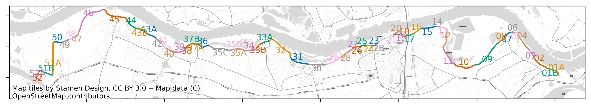

Workflows
Workflow Genereren van een vakindeling voor de VRTOOL
Op basis van de vakindeling invoerbestand (Vakindeling.csv) bestand kan vervolgens met de volgende python code een shapefile worden gegenereerd: generate_vakindeling_workflow.py uit de VRUtils GitHub.
De shapefile van het betreffende traject wordt gedownload van de webserver van het Nationaal Basisbestand Primaire Waterkeringen (NBPW), en vervolgens conform de m-waarden wordt opgeknipt. Een aandachtspunt hier is dat de richting van het opgeknipte traject volgens Vakindeling.csv anders kan zijn dan de richting van het traject volgens (NBPW).
Let op: De trajectlengte moet gelijk zijn aan de som van alle vaklengtes.
Het is ook mogelijk om het betreffende traject zelf in te voeren door ‘XXXXXX’
Draaien van de berekeningen voor vakindeling
Deze workflow kan worden aangeroepen vanuit de terminal (bijv. via Anaconda Prompt) door middel van het commando:
python '/pad/naar/generate_vakindeling_workflow.py' 'traject-1' '/pad/naar/vakindeling.csv'
Waarbij:
'/pad/naar/generate_vakindeling_workflow.py'vervangen moet worden met de pad naar de python codegenerate_vakindeling_workflow.py.'traject-1'vervagen moet worden door de officiële trajectnaam.'/pad/naar/vakindeling.csv'vervangen moet worden met de pad naarvakindeling.csv.
Let op dat de paden relatief zijn tot de locatie in de console.
Uitvoer van de code voor vakindeling
De uitvoer bestaat uit 2 bestanden die in dezelfde map als vakindeling.csv worden weggeschreven:
Vakindeling_traject.geojsonwaarin de opgeknipte vakindeling is opgeslagen.Vakindeling_traject.pngwaarin een figuur met de vakindeling is opgeslagen.
Wanneer beide bestaande zijn aangemaakt en de vakindeling van de figuur klopt met de verwachting is de code succesvol uitgevoerd.
Een voorbeeld van een vakindeling volgend uit de workflow is onderstaand weergegeven: 
Workflow Hydra-Ring
Als voorbereiding op de analyses met de VRTOOL moet een aantal berekeningen gemaakt worden met Hydra-Ring. Als eerste moet de benodigde invoer worden klaargezet in het bestand HR_default.csv. Dit bevat alle informatie voor de berekeningen voor overslag en waterstand.
Het is ook mogelijk dit bestand automatisch te vullen op basis van een shapefile met beoordelingsgegevens, en de shapefile van de vakindeling.
Zie daarvoor de workflow automatisch genereren van invoer voor Hydra-Ring berekeningen.
Berekeningen voor waterstand
Voorbereiden van de berekeningen voor waterstand
Als input voor de VRTOOL moeten voor 2023 en 2100 frequentielijnen van de waterstand worden afgeleid. De locaties zijn opgenomen in het bestand HR_default.csv.
Daarnaast moet een map worden gemaakt met daarin de submappen 2023 en 2100, volgens de volgende structuur:
Waterstandsberekening
├── 2023/
└── 2100/
In de mappen moeten de juiste hydraulische database bestanden worden geplaatst. In 2023 voor WBI2017, in 2100 voor het gewenste klimaatscenario. Dit betreft zowel een HRD database, een config database, en de HLCD database met de juiste statistiek.
Draaien van de berekeningen voor waterstand
Het draaien van de berekeningen wordt gedaan via preprocessing/workflows/hydraring_waterlevel_workflow.py.
Voor het draaien van de code moeten in de python code drie paden worden gespecificeerd:
work_dir: deze verwijst naar de hoofdfolder (Waterstandsberekening)HydraRing_path: deze verwijst naar de installatiefolder van Hydra-Ring (meestal een submap van de installatiefolder van Riskeer)database_paths: eenlistmet daarin de subfolders waarin de hydraulische databases staan.
Alle opgegeven paden moeten als pathlib.Path object worden opgegeven. Dus Path(r'mijnpad'). Let daarbij op dat niet afgesloten moet worden met een \.
Vervolgens kunnen door het runnen van hydraring_waterlevel_workflow.py alle waterstandsberekeningen worden uitgevoerd.
Deze workflow voor waterstandsberekeningen kan worden aangeroepen vanuit de terminal (bijv. via Anaconda Prompt) door middel van het commando:
python '/pad/naar/hydraring_waterlevel_workflow'
Waarbij /pad/naar/hydraring_waterlevel_workflow moet vervangen worden door de pad naar hydraring_waterlevel_workflow.py relatief aan de locatie in de console.
Uitvoer van de code berekeningen voor waterstand
Resultaten worden weggeschreven in subfolders met de naam van de doorsnede.
Interpreteren en verder verwerken van de uitvoer
Resultaat van de berekeningen zijn frequentielijnen voor 2023 en 2100. Verdere instructies volgen.
Berekeningen voor overslag
Voorbereiden van de berekeningen voor overslag
Voor overslag zijn iets meer gegevens nodig. De structuur is identiek aan die van waterstandsberekeningen, maar nu moeten de gegevens in de volgende structuur worden opgegeven:
Waterstandsberekening
├── 2023/
├── 2100/
└── prfl/
In de folder prfl moeten profielbestanden worden opgenomen voor alle door te rekenen doorsnedes. De naam van het bestand moet daarbij overeenkomen met de doorsnede uit het *.csv invoer bestand.
Draaien van de berekeningen voor overslag
Verder werkt deze workflow identiek aan die van waterstand, via het bestand hydraring_overflow_workflow.py.